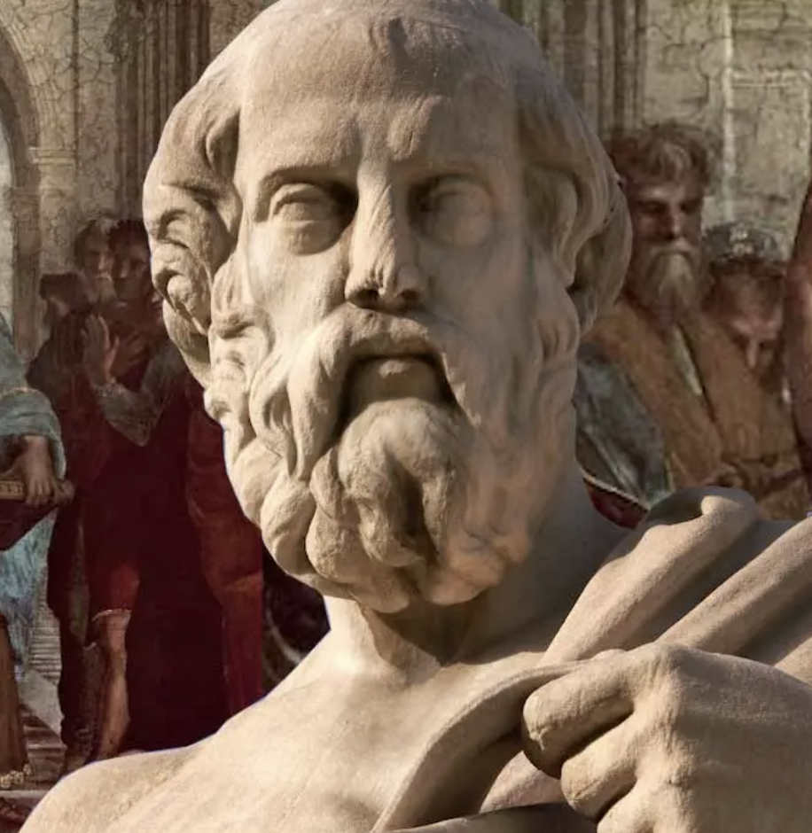
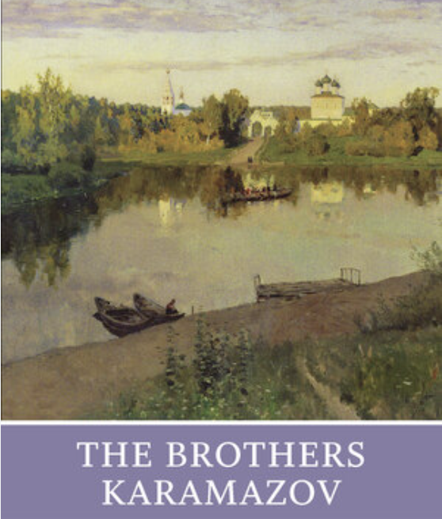
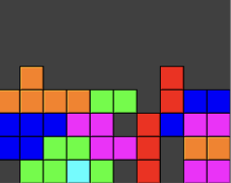
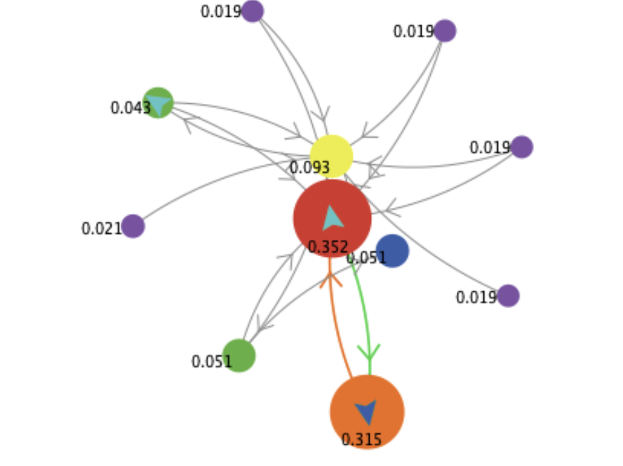
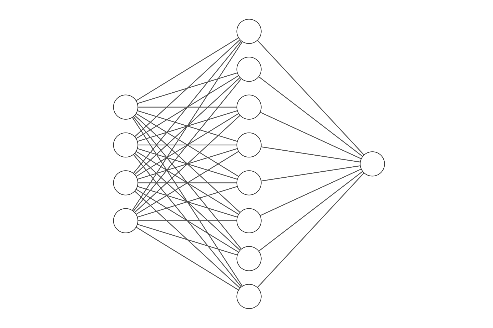
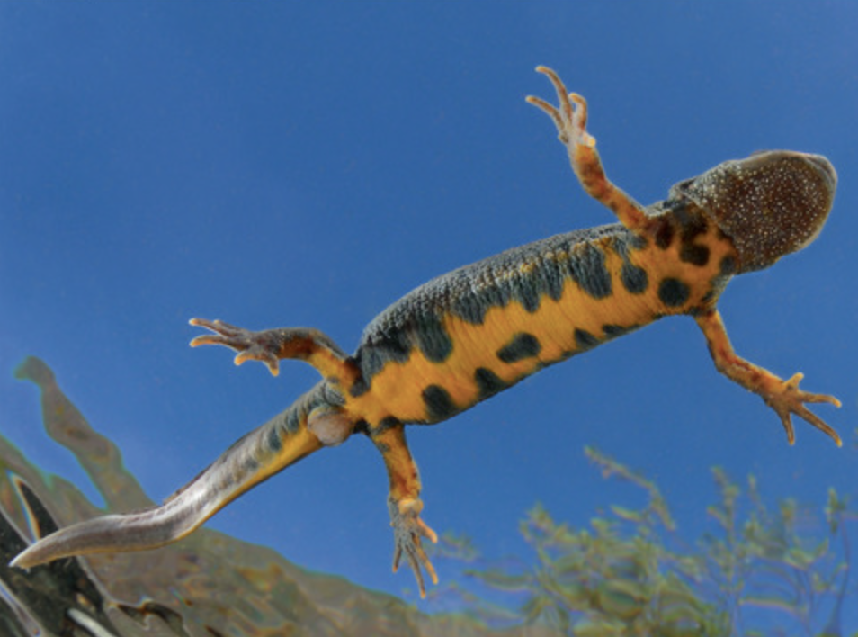

Home
Portfolio
Quotes
Portfolio
Philosophical Essays
The Moral Obligation of Digital Ed.

Timing and Metrios in Plato's
Sophist

Alyosha: The Incommensurability of Life
Kant and Hume: Crossroads of Humanity
My Coding Projects

Tetris
Polymorphism
OOP
Inheritance
Java

Pagerank (based on Google Search)
Algorithms
NLP
TF-IDF
Python
Shell Implementation
Reaping
Concurrency
Signal Handling
C

Cervantes (text generation)
Generative Models
RL
Tensorflow
Python
My Publications

Salt contamination in wood frogs (Wiley)
NYSCamp CT Delegate Profile (CJSE)
My Brown Video Portfolio